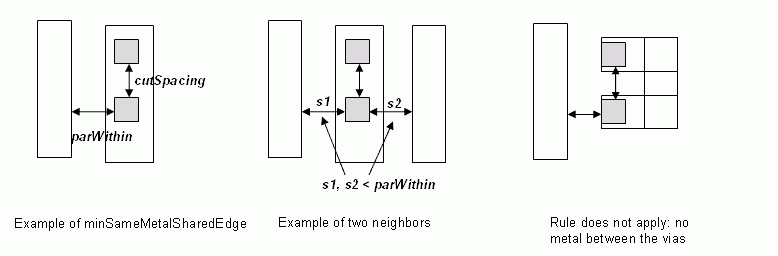

|
 |
 |
||||||
|
|
|
||||||
Some new processes require a different cutSpacing between 2 via cuts that have common parallel run length is greater than 0. They must also have a neighbor wire within parWithin distance from them on the same edge. The rule should be defined on a cut layer. It may also depend on a cut class.
This rule is ignored by some fabs in following cases:
| Constraint type: | oaLayerConstraint |
| Value types: | oaIntValue |
| Database types: | oaDesign, oaTech |
| Object types: | oaAppObject |
The following value types are supported by this constraint:
This oaIntValue specifies the cutSpacing.
Units: DBU
The following parameters are supported by this constraint:
| Name | Value Type | Units | Default | Description |
|---|---|---|---|---|
| parallelEdgeWithin oacParallelEdgeWithinConstraintParamType |
oaIntValue | DBU | (Required) |
This parameter specifies the parWithin value (as shown in the figure provided below). |
| exceptTwoEdges oacExceptTwoEdgesConstraintParamType |
oaBooleanValue | Boolean | False |
If this parameter is set to true, this rule can be ignored if there are two neighbor wires within parWithin distance on the same edge. |
| exceptSameViaCount oacExceptSameViaCountConstraintParamType |
oaIntValue | Count | None |
Constraint does not apply if there are at least this many cut shapes in the same metal shape above and below. |
| aboveOnly oacAboveOnlyConstraintParamType |
oaBooleanValue | Boolean | False |
When set to true, this parameter specifies that the rule applies only if the via cut has common above metal routing layer. |
| cutClass oacCutClassConstraintParamType |
oaDualIntValue | DBU | None |
This parameter is used to store the dimensions of the cut class. |

Copyright 2002 - 2010 Cadence Design Systems, Inc.
All rights reserved.